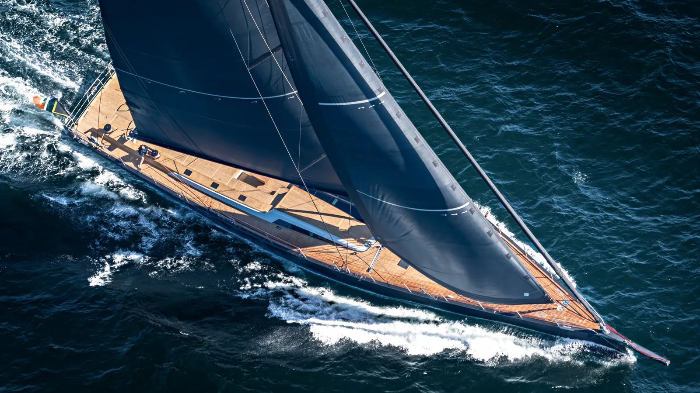
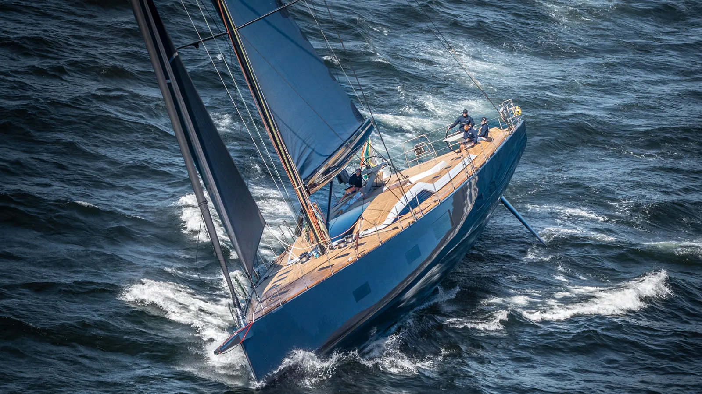
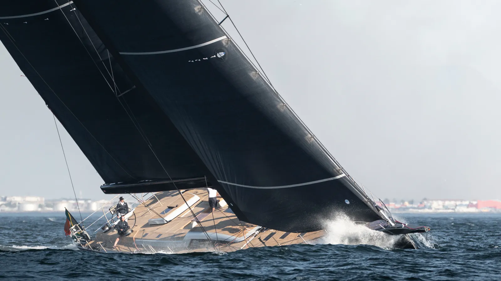
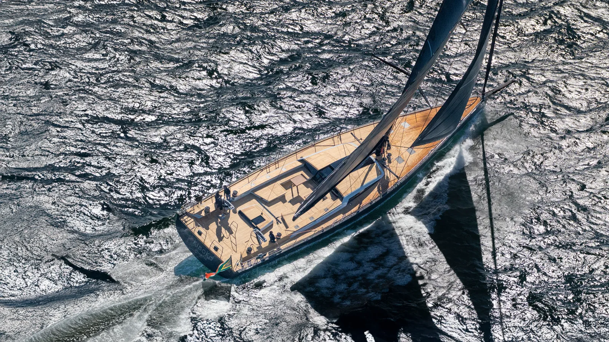
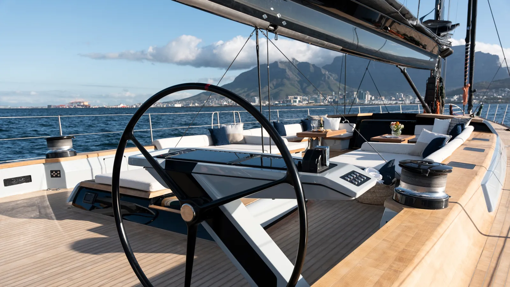
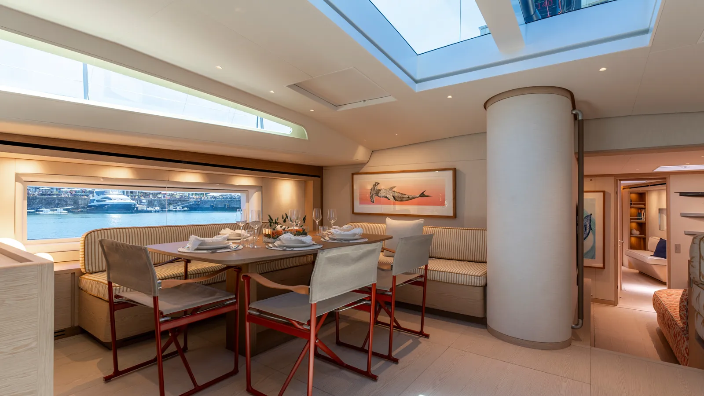

Kiboko 4






The Brief
A superyacht that sails like a racer
The owner of Kiboko 4 came to Farr with a clear vision: a yacht that could win regattas and still cruise the world in comfort. At 108 feet, this is not a boat that should be quick — and yet it is. The brief demanded performance without compromise, blending superyacht refinement with genuine racing capability.
This was the fourth collaboration between the owner and Farr Yacht Design, building on a relationship that spans decades and multiple successful builds. Each iteration has pushed the boundaries of what’s possible at this size.
The Approach
Performance-driven hull design at superyacht scale
Farr applied the same computational fluid dynamics methodology used on America’s Cup and Volvo Ocean Race programs to optimize the hull form. Starting with the Southern Wind 108 platform, the team refined the rig, sailplan and appendages to optimize the performance envelope for typical Mediterranean conditions and occasional racing under the ORCsy system.
Two key design features define Kiboko 4: generous sail area (607m² upwind, 1288m² downwind) for light-air racing and maneuverability, and high stability via a 6.2m tapered planform lifting keel with a ballast ratio of 33%. The hull’s prismatic coefficient of 0.555 is maintained from 0° through 15° of heel, with a precisely designed longitudinal volume distribution.
The Innovation
Where racing pedigree meets superyacht luxury
The twin rudder arrangement allows Kiboko 4 to be pushed to high heel angles with exceptional controllability and speed while racing. For cruising, the sailplan is easily depowered with a furling staysail at 55% of the all-purpose headsail, plus multiple mainsail reefs — giving the crew flexibility depending on conditions.
The owner moved from a fixed keel on the previous boat to a high-aspect ratio lifting keel with a draft range of 6.2m to 4.0m — improving not only performance and efficiency but opening up many more harbors and cruising destinations. The World Superyacht Awards jury recognized this integration of racing capability with genuine cruising versatility.
Wind
Built by Southern Wind Shipyard
Southern Wind Shipyard is a world-renowned builder of high-performance sailing superyachts. Kiboko 4 continues a long relationship between Southern Wind and Farr Yacht Design, following the successful Kiboko 3 (SW105).
View builder partnership →| Specification | Value |
|---|---|
| Length Overall | 33.00 m / 108’ |
| Draft (keel down) | 6.20 m / 20.3’ |
| Draft (keel up) | 4.00 m / 13.1’ |
| Keel | Tapered planform lifting keel |
| Ballast Ratio | 33% |
| Sail Area (upwind) | 607 m² |
| Sail Area (downwind) | 1,288 m² |
| Rudders | Twin |
| Builder | Southern Wind Shipyard |
| Platform | Southern Wind 108 |
| Award | Sailing Yacht of the Year 2025 |
More Superyachts
Ready to start your superyacht project?
From initial concept to award-winning launch — let’s build something extraordinary.
Get in Touch